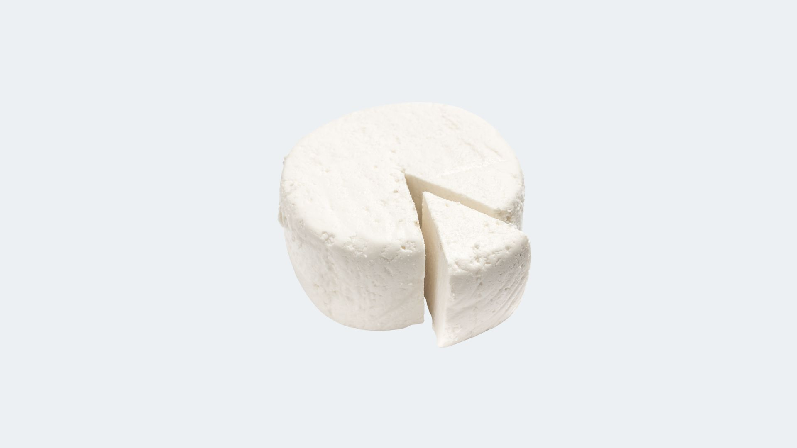

Fermentación láctica en el queso
La fermentación láctica es un proceso en el que las bacterias transforman la lactosa (C₁₂H₂₂O₁₁) en ácido láctico (C₃H₆O₃).
Lactosa + Agua → Ácido láctico
En este proceso no se produce gas, por eso los quesos frescos no tienen agujeros.

Fermentación alcohólica en pan y cerveza
A diferencia de la fermentación láctica, en la fermentación alcohólica las levaduras convierten la glucosa en etanol y dióxido de carbono.
Glucosa → Etanol + Dióxido de Carbono
- En el pan, el CO₂ forma burbujas y hace que la masa suba.
- En la cerveza y el vino, el CO₂ crea burbujas en la bebida.